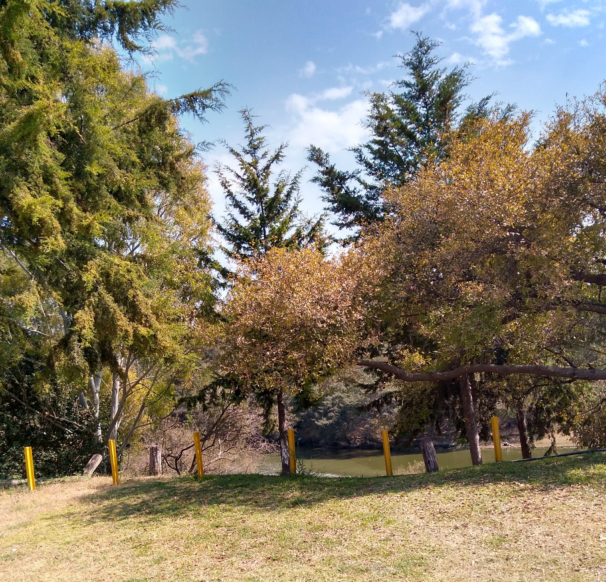

Hobbies
■ Fotografía
"La fotografía es arte ante la mirada del observador" esa frase la pensé un día que me encontraba admirando un paisaje que había capturado yo, es un lugar que me da paz, se encuentra en la Sierra Norte de Puebla. La naturaleza es maravillosa y me encanta admirar cada detalle de vida, las texturas, los colores y en especial el olor.

■ Juegos mecánicos
La adrenalina en la vida da un impulso a vivir, o quizás solo son momentos de locura. Cuando me subo a una atracción como las del Six Flags, puedo liberar estrés gritando y me siento bien, estando en la cima me siento libre y no se me hace pesada la vida porque me desestreso y dejo de pensar lo que hay alrededor de mi.
■ Escuchar música.
La música es un mundo de letras con sentimientos, emociones encontradas, y al escuchar canciones en momentos importantes crean recuerdos y se vuelven especiales. Un género musical que me gusta escuchar es el rock alternativo, mi banda favorita es Imagine Dragons sus canciones tienen mensajes muy profundos y es difícil que algo me guste.